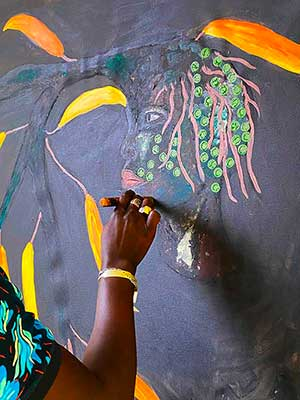

Le peintre sénégalais Ousmane Niang réactive le pointillisme
Le peintre sénégalais est venu poser ses pinceaux pas comme les autres en banlieue parisienne, dans la nouvelle résidence créée par la galerie Afikaris. En France comme à Dakar, il poursuit son combat en faveur de l’éveil des consciences sur l’environnement.
Le 29 juillet 2023, par Marie Moignard
La
peinture d’Ousmane Niang est anachronique,
c’est-à-dire
éternelle. Prise entre plusieurs temporalités,
inspirée du style pointilliste de la fin du XIXe siècle, elle parle d’essentiel, comme la préservation de la
nature.
Curieusement, l’artiste ne cite pas tout de suite Seurat parmi ses références, mais des précurseurs comme
Van
Gogh ou des héritiers comme Klimt, ainsi que la tradition aborigène. Cette technique de la fragmentation de
la
touche, il l’envisage dans toute sa complexité. Au-delà de mes inspirations, j’ai eu envie de faire des
points
à ma façon : des points dans des points.
Dans ses toiles, chaque point représente ainsi la solution à un problème. Et la forme métonymique du point
dans
le point, c’est la solution dans le problème. En Afrique, il est certain que nous avons plus besoin de
solutions
.
Multiplier ce signe, c’est pointer pour dénoncer, pour matérialiser l’évidence, ne pas laisser de place au
vide.
Le rôle même de l’artiste, selon Niang. Ce sont ses professeurs à l’École nationale des arts de Dakar qui
l’ont
mis sur la voie. Ils lui ont ouvert les yeux sur ce qu’est l’art contemporain : non seulement une esthétique
mais
aussi un vecteur de message.
Malgré l’accumulation de formes, Ousmane Niang cherche toujours à simplifier sa technique, dans la lenteur de la création. Tout commence par le dessin, qui donne l’esquisse de la composition finale. Puis il peint le fond, d’une touche patiemment léchée héritée de son passage aux beaux-arts. Ensuite, il s’arme de pinceaux modifiés qu’il a fabriqués lui-même pour réaliser sa version personnelle du pointillisme : il n’a gardé que le manche sur lequel il fixe un bouchon en plastique, pour produire ce fameux "point dans le point".
À l’aise dans le calme et la solitude, Ousmane Niang est un contemplatif. L’une des toiles réalisées durant
sa
résidence dans l’atelier de la galerie Afikaris à Montreuil a nécessité douze jours de travail, ménageant
des
temps d’attente, de séchage. Une autre oeuvre qui sera dévoilée cet été dans une exposition collective
dépeint
un arbre-soldat, armé d’un fusil et entouré d’oiseaux fabuleux. Les hommes doivent protéger la
forêt,
explique-t-il, car sans les arbres, les oiseaux vont disparaître.
Ils sont en quelque sorte son
animal totem,
que l’on retrouve de toile en toile : Je m’identifie à eux car ce qui est important pour moi en tant
qu’artiste,
c’est de me sentir libre, comme un oiseau.
Lire l'article sur le site de Diptyk